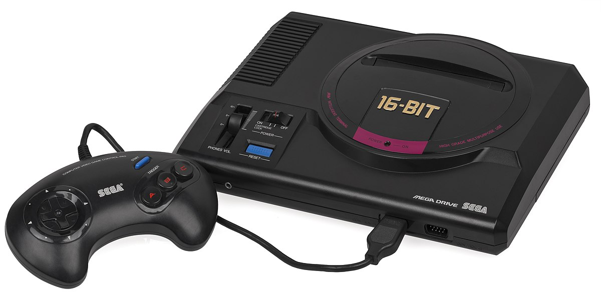

SEGA
Sega Corporation is a Japanese multinational video game developer and publisher headquartered in Shinagawa, Tokyo. Its international branches, Sega of America and Sega Europe, are respectively headquartered in Irvine, California, and London. Sega's arcade division existed as Sega Interactive Co., Ltd. from 2015 to 2020 before it merged with Sega Games to create Sega Corporation with Sega Games as the surviving entity. Sega is a subsidiary of Sega Group Corporation, which is, in turn, a part of Sega Sammy Holdings. From 1983 until 2002, Sega also developed video game consoles.
How it started
Sega was founded by American businessmen Martin Bromley and Richard Stewart as Nihon Goraku Bussan on June 3, 1960; shortly after, the company acquired the assets of its predecessor, Service Games of Japan. Five years later, the company became known as Sega Enterprises, Ltd., after acquiring Rosen Enterprises, an importer of coin-operated games. Sega developed its first coin-operated game, Periscope, in the late 1960s. Sega was sold to Gulf and Western Industries in 1969. Following a downturn in the arcade business in the early 1980s, Sega began to develop video game consoles, starting with the SG-1000 and Master System but struggled against competitors such as the Nintendo Entertainment System. In 1984, Sega executives David Rosen and Hayao Nakayama led a management buyout of the company with backing from CSK Corporation.
Entry into the game console market
With the arcade game market once again growing, Sega was one of the most recognized game brands at the end of the 1980s. In the arcades, the company focused on releasing games to appeal to diverse tastes, including racing games and side-scrollers. Sega released the Master System's successor, the Mega Drive, in Japan on October 29, 1988. The launch was overshadowed by Nintendo's release of Super Mario Bros. 3 a week earlier. Positive coverage from magazines Famitsu and Beep! helped establish a following, but Sega shipped only 400,000 units in the first year. The Mega Drive struggled to compete against the Famicom and lagged behind Nintendo's Super Famicom and NEC's PC Engine in Japanese sales throughout the 16-bit era.
Sega Genesis
The Sega Genesis, known as the Mega Drive outside North America, is a 16-bit fourth-generation home video game console developed and sold by Sega. The Genesis is Sega's third console and the successor to the Master System. Sega released it as the Mega Drive in Japan in 1988, and later as the Genesis in North America in 1989. In 1990, it was distributed as the Mega Drive by Virgin Mastertronic in Europe, Ozisoft in Australasia, and Tec Toy in Brazil. In South Korea, it was distributed by Samsung as the Super Gam*Boy and later the Super Aladdin Boy.
In Japan, the Mega Drive fared poorly against its two main competitors, Nintendo's Super Famicom and NEC's PC Engine (known in the West as the TurboGrafx-16), but it achieved considerable success in North America, Brazil, and Europe. Contributing to its success were its library of arcade game ports, the popularity of Sega's Sonic the Hedgehog series, several popular sports franchises, and aggressive youth marketing that positioned it as the cool console for adolescents. The North American release in 1991 of the Super Famicom, rebranded as the Super Nintendo Entertainment System, resulted in a fierce battle for market share in the United States and Europe that has often been termed as a "console war" by journalists and historians. As this contest drew increasing attention to the video game industry among the general public, the Genesis and several of its highest-profile games attracted significant legal scrutiny on matters involving reverse engineering and video game violence. Controversy surrounding violent games such as Night Trap and Mortal Kombat led Sega to create the Videogame Rating Council, a predecessor to the Entertainment Software Rating Board.
Sega Genesis Mini
The Sega Genesis Mini, known as the Mega Drive Mini in regions outside of North America, is a dedicated console modeled on Sega's Genesis. The Mini emulates the original console's 16-bit hardware, and includes 42 games ported by M2. It was released in North America and Japan in September 2019, and in Europe and the Middle East the following month.
The Sega Genesis Mini was first announced at the Sega Fes show in April 2018. The announcement was part of a trend of releasing smaller versions of 80s and 90s retro videogame consoles. It was delayed in September, missing the console's 30th-anniversary window, when Sega dropped its partnership with AtGames, whose 2017 Sega Genesis Flashback was critically panned for its production quality. Instead of using AtGames's Flashback software on a Japan-exclusive Mini, Sega handled the entire production of the system. The system was released on September 19, 2019, except in Europe and the Middle East, where it was released on October 4, 2019.